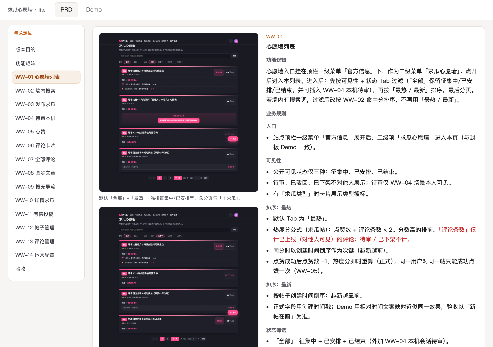
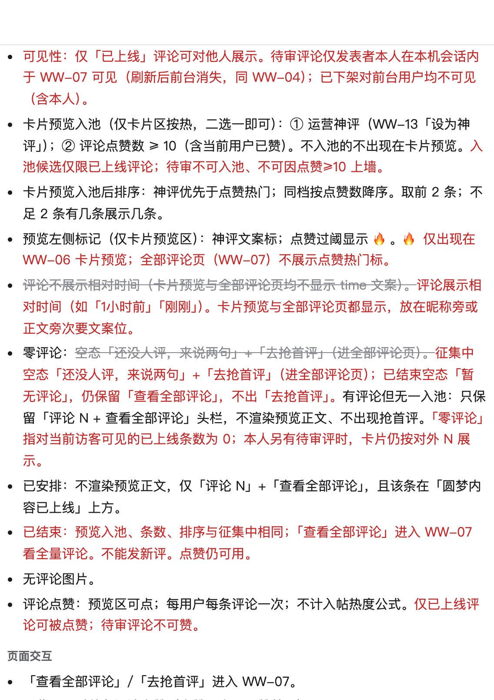
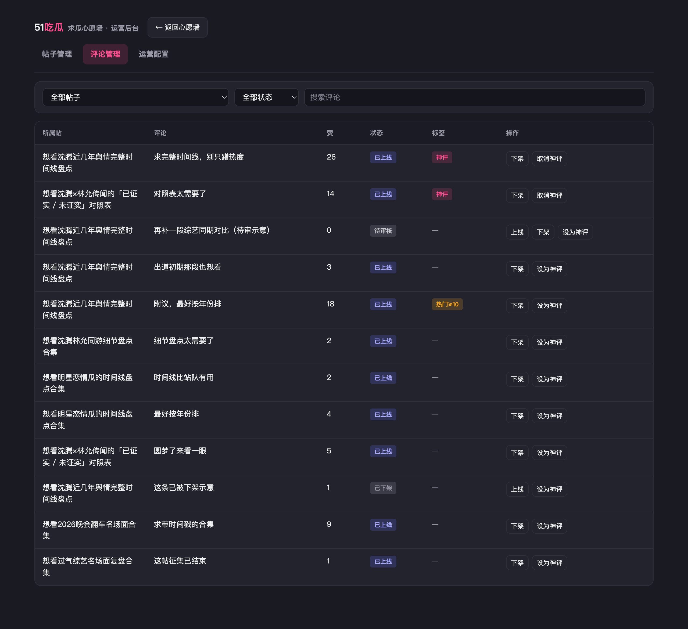

Product × AI · 内部产品分享
产品工作中怎么用 AI
不是再讲一遍需求流程——流程大家熟。重点是每一步里 AI 扛什么、产品把什么关。
从想需求、做 Demo 到交 PRD，看 AI 的位置。
Rules Demo PRD 改稿
带着 AI 做需求
一条常见顺序
步骤名字眼熟；看的是每一步里 AI 的定位，以及产品侧补哪一刀。
1 定规矩 人写 Rules → AI 开聊自带口径
2 想需求 AI 发散串流程 → 产品选主线、砍一期范围
3 做 Demo AI 出界面按圈改 → 产品判对错、有没有改过头
4 Demo 定稿 闸门 产品宣布 → AI 只翻译、不加功能
5 写 PRD AI 按规范填满 → 产品验边界与口径
6 若还要改 产品定是否进本期 → AI 同步改多产物并标新旧
人机分工
交给 AI · 产品定 · AI 做什么
材料与任务可以交给 AI；选哪条、砍什么由产品定；AI 按阶段把事做完，不替产品拍板。
要解决什么问题，做成了长什么样
现网 / 纪要 / 旧稿 / 已有需求资料
有把握的判断 vs 猜测——分开写
阶段锁死：先玩法还是先 Demo / PRD
团队 Rules、模板、现网站点样子
这一期做哪些、明确不做哪些
对外怎么说，哪些话不能说
要不要登录，身份怎么识别
改动进不进本期；Demo 能否定稿
AI 顺手多加的能力，留还是砍
发散串主流程；列状态与风险，给 2～3 套做法
出能点的 Demo，按圈选改局部、补空态
定稿后按 Demo / Rules 填满 PRD，不加功能
改稿时 PRD、Demo、截图一起动并标新旧
把选项和后果写清楚，等产品拍板
先定规矩，再开需求
给 AI 装默认法
重复出现的约定，更适合一开头就写进项目——否则换人、换对话，文档会长得都不一样。
Rules
规则
写进仓库的团队默认法（如 `.cursor/rules/*.mdc`）。新开对话时 Agent 常自动带上，不用每次重讲。
适合：PRD 长什么样、文件改哪、弹窗/截图等反复出现的约定
特点：项目级、长期有效；换人换窗口也还在
代价：写错会一直生效，要当成产品口径维护
Skill
技能
一套可复用的操作说明书（流程、检查清单、怎么交付）。需要时再打开，不必每次塞满上下文。
适合：做 PPT、截图、某类 Demo 的固定做法
特点：按需调用；不用时不占对话额度
和 Rules 比：Rules 是「默认必须遵守」；Skill 是「做这类活时再请来」
Prompt
单次吩咐
这一次聊天里你亲手写的指令。只对当前对话有效，换窗口后不会自动还在。
适合：本期范围、先发散别写 PRD、封板后只翻译等当场吩咐
特点：最灵活；说完就用，改口径也最快
风险：没写进 Rules/Skill 的约定，下一次还得再说一遍
案例 · .cursor/rules/
fangzhou-card-actions-layout.mdc # 卡片操作栏整组右对齐，组内可选在固定左侧
fangzhou-display-edit-split.mdc # 展示与编辑必须分离
fangzhou-source-code-path.mdc # 方舟现网源码只查指定目录，禁止乱找
fangzhou-ui-mono.mdc # 方舟黑白 UI 规范；只改视觉，不顺手改结构文案
haiwai-source-of-truth-sync.mdc # 海外项目为唯一编辑源；改完同步覆盖主目录
html-image-lightbox.mdc # HTML/PRD 说明用图须页内点击放大
index-prd-links.mdc # 对外 PRD 必须挂根目录 index.html
modal-mask-dismiss.mdc # 编辑弹窗禁点遮罩关闭；仅预览类可关
overseas-prd.mdc # 正式需求 = HTML PRD；结构 / 交互 / 异常规范.cursor/rules/ · 文件名 + 各文件 description 摘要
规矩定好了
文档才长得一样
不必每个需求都重新发明版式——规矩在，换人写也仍然是同一套结构。
把「本组 PRD 该长什么样」写进规则
换需求、换人写，页面结构和交付方式仍能对得上
常见交付：左边截图、右边说明；顶上可切「说明 / 能点的 Demo」

心愿墙 PRD 真页 · 左图右文 + 顶栏可切 Demo
想需求时
通常先给 AI 哪些材料
材料越全，胡编越少；收到的需求资料当原材料拆开看，不要一上来当终稿照抄。
要解决什么问题，做成了长什么样
谁在痛 · 做成后用户看到什么 · 怎样算做成
现在产品是什么样、有哪些限制
现有能力 · 不能动的约束 · 技术/账号边界
有把握的判断 vs 猜测——分开写
已定结论 · 待验证假设 · 别混成同一句
已有资料：标「必须听 / 还要核对 / 建议别做」
硬约束 · 待核实 · 可忽略建议
阶段锁死：先玩法与主流程，先不写字段 PRD
先串怎么用 · 细节后补 · 别一上来写终稿
先想开，再收窄
AI 铺开，产品收刀
先把用户可能怎么用想明白，再决定这一期上哪一块；否则收窄时缺少依据。左边是让 AI 发散，右边是产品收敛。
① 让 AI 发散 · 原话
AI 已偏细写 MD 时，产品喊停：先串玩法，别收敛。
产品 · 2026-10-28
我觉得现在都不需要这么细，我们先把思路放开。我不是让你来帮我收敛的，我是让你来帮我发散的。这个东西能怎么玩？这个产品能怎么玩？先把思路理清楚，不要一来就搞这么细。很多细节的东西后面再讨论，先把思维放开，这个东西要怎么玩啊？比如刚刚我们提到的心愿、投票、战队，还有 AI 评论这些功能，先把它们串起来。先不用去解释这些功能到底要干嘛，或者怎么去设计，先把功能讲出来串起来，把玩法连通，尽量发散。
核心还是去解决“找瓜”，然后“丰富瓜”，以及“提心愿瓜”之类的。目标和定位没有什么问题，重点就在于功能层面。
AI · 改成玩法发散稿
MD 已改成 **v0.3 玩法发散稿**，细则和收敛段落都拿掉了。
三件核心事：**找瓜 → 丰富瓜 → 提心愿瓜**。零件（心愿、加油、站队/投票、AI……）都挂在这三件事上；几条主回路一起铺开，细节先不下锤。
② 产品收敛 · 原话
玩法铺开后，产品从完整版拉简化分支：只留求瓜链路。
产品 · 收窄
但都拉一个版本，只保留求瓜帖子链路，投票和站队玩法先删除，后续迭代
- 心愿墙入口暂定放在一级。
- 补充心愿墙的搜索功能。
- 求瓜类型细化（求瓜/求资源/求功能），求功能类不对外展示，仅反馈后台；优先保证求瓜。---放在现在这个版本里面。
- 求瓜帖子可配置开关，开启后允许用户发起有偿投稿，引导至 TG。-要在两个版本里面都有
- 审核流程：先 AI 审核，运营再审核确认是否对外展示。--规则，PRD 适合用
核心思路是在当前版本的基础上拉一个分支进行简化：
1. 新分支：只保留“心愿墙”，以及上述提到的“搜索”和“引导用户投稿”功能。
2. 当前旧版本：保留搜索和引导投稿，并新增支持多种类型的“求瓜”。你先梳理一下，我看一下是否合理，然后再开始动工。
更适合产品自己拍板
「写得全」≠「这一期该做」
AI 很会把方案写全；完整度是模型强项，取舍是产品职责。
这一期做多大、先做什么
对外怎么说，哪些话不能说
登不登录，身份怎么算
对外有没有承诺、这条还进不进这一期
AI 自己加出来的环节，留还是停
案例 · 完整版（发散）vs lite（拍板后保留）
左边是想开时铺开的能力（标清谁提出）；右边是产品收窄后一期只留的。
完整版 · 发散铺开
产品 找瓜 / 丰富瓜 / 提心愿瓜 三条主目标产品 心愿、投票、战队、AI 评论要串成玩法产品 底层像贴吧：多类型帖，不是单表单产品 搜无结果挂模块 + 常驻入口；提交/点赞要登录AI 站队投票 / 对抗式帖、加油热度、圆梦回响AI 标签聚合（同艺人/事件）、模块内吃瓜 AgentAI 搜无结果「AI 再挖一遍」接力（后被砍）纪要 有偿投稿开关、求瓜类型细化（产品后续补进）纪要 图片能力（完整版保留；lite 后期去掉）
lite · 一期保留
只保留求瓜帖主回路（提心愿征集）
墙内搜索；搜无结果 / 有结果都可去提心愿
有偿投稿开关 → 引导 TG
审核：AI 初审 + 运营确认是否对外
不登录可发（匿名/昵称）；待审本机可见
去站队 / 投票 / Agent / 图片 / 井号标签
PRD / 对外入口只认 lite
设计时
先做出能点的 Demo
对齐不一定先改文档；先做一版能点的界面，对着屏幕确认对不对，再落到 PRD。
1 · 搭结构
AI 出第一版骨架
怎么说
给主流程 + 页面清单（搜 / 列表 / 详情 / 后台…）
说明：先 HTML 可点原型，先别写 PRD
指定参考：现网站点 / Rules 里的版式约定
要点
先通主路径，细节状态可以后补
一上来不要字段级 PRD
2 · 能点 Demo
按圈选改局部、补状态
怎么说
圈选 / 截图标出要改的区域
一次只改一块：文案、布局、交互
点名要补的态：空态、无结果、待审、已结束…
要点
局部改，避免整页重写走样
关键路径必须能点通，不能只是静图
3 · 对照现网
样子跟站内对齐
怎么说
打开现网或内置预览，让 AI 对照色、字、卡片比例
写清：跟谁像、哪里可以不像
要点
观感一致，评审时少吵「像不像自家站」
别让 AI 自行发明另一套视觉语言
4 · 纪要回灌
产品判对错 / 是否过头
怎么说
把会上结论逐条回灌：「保留 / 改回 / 不做」
点名过度发挥：多列、多跳转、多出来的能力
要点
结构对错由产品看，不是 AI 自觉差不多
改完立刻在 Demo 里验收，再进 PRD
Demo 定稿后，再写 PRD
定稿 = 切换 AI 角色
不定稿，AI 会一直当「一起改设计的搭档」；一开写 PRD 却还在加功能，文档和 Demo 就会对不上，研发也没有稳定靶子。
为什么要定稿？
Demo 阶段允许胖一点：试玩法、改交互、对齐「像不像」
写 PRD / 给研发前，必须冻住「这一期到底做哪一版」
冻住的是交互真源：以后改，以这一版 Demo 为准，而不是再开一轮发明
为什么等于切换 AI 角色？
定稿前：AI = 设计搭档——可以提方案、改界面、补状态
定稿后：AI = 翻译员——只把已定 Demo 写成 PRD，不许再加功能
角色不切，AI 会把「写说明」当成「继续设计」，范围会悄悄变胖
定稿前 设计搭档
目标是对齐可能性；Demo 可以改，范围还可以动。
可以新增、删除、重排界面能力
产品负责判对错、砍过头
结束条件：主流程能点通 + 产品宣布「就按这版」
→
定稿后 翻译员
目标是写清楚交付物；Demo 逻辑不再扩，只往文档里填满。
禁止「顺便加一个…」「要不要也做…」
产品验口径与边界，挡住另起炉灶
对外只挂这一版；要改范围须重新宣布
按自己定好的规范写 PRD
AI 填满，不另起炉灶
PRD 长什么样，你已经写进 Rules；这一步是让 AI 按这份规范把内容填满，而不是再发明一套写法。
01
为什么做 / 做什么
背景、问题、本期范围；让研发先知道「为谁解决什么」
02
功能列表带稳定编号
如 WW-01…；方便对照 Demo、验收、改稿新旧
03
每块：规则 / 交互 / 异常 / 数据
五节写满；主路径之外的失败、空态、权限也要落到文案
04
左图右文等约定版式
按 Rules 里的 `.pair` 等结构排，换人写也长得一样
05
说明与 Demo 同页可切换
顶栏 PRD / Demo；说明和能点原型对着看，少来回翻文件
06
验收标准；只确认看不清的边界
可勾选验收；定稿后只问 Demo 看不清处，不再加功能
定稿之后若还要改
多产物一起动，看得出改了什么
定稿不等于不能改；改则 PRD、Demo、截图一起动，文档上要看得出改过什么。
先确认：这条还进不进这一期（产品拍板）
文档能对照新旧：新增标出，废止划掉但保留
PRD、Demo、截图、验收相关句子一起改
避免只改文档假装对齐，也避免借改稿扩大范围
案例 · 评论人工上线 / 下架（PRD ↔ Demo）

PRD · 废止删除线划掉 + 红字新增（新旧对照）

Demo · 评论管理同步（上线 / 下架）
总体回顾
按阶段给角色说明
跟 AI 说话不用一次讲完；按阶段切换角色说明。下面五句是开场说法，对着 AI 直接说即可。
① 想需求 先别写 PRD 背景和限制如下……资料当参考；先玩法和主流程；拿不准先问我。 ② 做 Demo 按规矩、像现网 先打通主流程；细节再按圈选改。 ③ 写 PRD 按定稿翻译 不要新增功能；只确认看不清的地方；按规范写。 ④ 改稿 标新旧 + 同步 先说明改什么；Demo 和截图一起改。 ⑤ 固定开头 拍板前别落稿 范围 / 表述 / 登录 / 是否进本期，确认前不写进 PRD。
可照着做
一条需求可以怎么走完
带走用的路径图；每一步块内写清人和 AI 各干什么。
1 定规矩 人 写最小 Rules → AI 开聊自带口径
→
2 备材料 + 定阶段 人 给材料、锁阶段 → AI 拆资料、标约束
→
3 先想开再收窄 AI 串主流程、铺可能性 → 产品 收一期范围
→
4 做 Demo AI 出界面、按圈选改 → 产品 判对错 / 是否过头
↓
←
7 若还要改 产品 定是否进本期 → AI 同步改多产物并标新旧
←
←
5 Demo 定稿 产品 宣布定稿 → AI 只翻译、不加功能
Open floor
开放讨论
步骤清单到上一页；接下来交换用 AI 做需求时的卡点。
Rules 准备先写什么，写到什么粒度够用？
Demo 定稿后，怎么管住 AI 不加戏？
哪一步最容易跳过 AI，或反过来全丢给 AI？
收到一份很全的需求资料，怎么避免照抄成终稿？
完整版想得很开，一期怎么收窄才站得住脚？
封板后又要改，怎么改才让研发一眼看出改了哪？
跟 AI 说话时，有没有固定开头句好用？
团队还没 Rules 时，个人先从哪几条开始？
Product × AI
谢谢
用 AI 做产品：人定规矩与范围，AI 加速落地；拍板仍在产品手里。
有卡点随时聊。